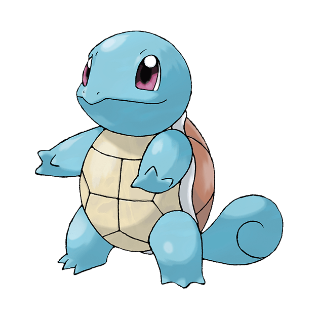

Bulbasaur (Japanese: Fushigidane) is a dual-type Grass/Poison Pokemon introduced in Generation I. Bulbasaur is a small, quadrupedal amphibian Pokemon that has blue-green skin with darker patches. It has red eyes with white pupils, pointed, ear-like structures on top of its head, and a short, blunt snout with a wide mouth. A pair of small, pointed teeth are visible in the upper jaw when its mouth is open. Each of its thick legs ends with three sharp claws. On Bulbasaur's back is a green plant bulb that conceals two slender, tentacle-like vines, which is grown from a seed planted there at birth. The bulb also provides it with energy through photosynthesis as well as from the nutrient-rich seeds contained within.

Squirtle (Japanese: Zenigame) is a Water-type Pokémon introduced in Generation I. Squirtle is a small reptilian Pokémon that resembles a light-blue turtle. While it typically walks on its two short legs, it has been shown to run on all fours in Super Smash Bros. Brawl. It has large, purplish or reddish eyes and a slightly hooked upper lip. Each of its hands and feet have three pointed digits. The end of its long, squirrel-like tail curls inward. Its body is encased by a tough shell that forms and hardens after birth. This shell is brown on the top, pale yellow on the bottom, and has a thick white ridge between the two halves.
Charmander (Japanese: Hitokage) is a Fire-type Pokémon introduced in Generation I. Charmander is a bipedal, reptilian Pokémon with a primarily orange body and blue eyes. Its underside from the chest down and the soles of its feet are cream-colored. It has two small fangs visible in its upper jaw and two smaller fangs in its lower jaw. A fire burns at the tip of this Pokémon's slender tail and has blazed there since Charmander's birth. The flame can be used as an indication of Charmander's health and mood, burning brightly when the Pokémon is strong, weakly when it is exhausted, wavering when it is happy, and blazing when it is enraged. It is said that Charmander would die if its flame were to go out. However, if the Pokémon is healthy, the flame will continue to burn even if it gets a bit wet and is said to steam in the rain.